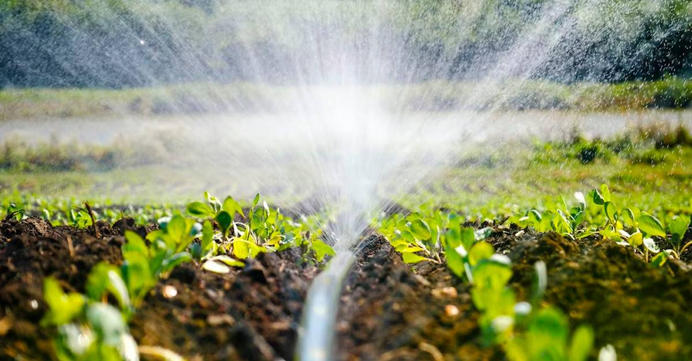
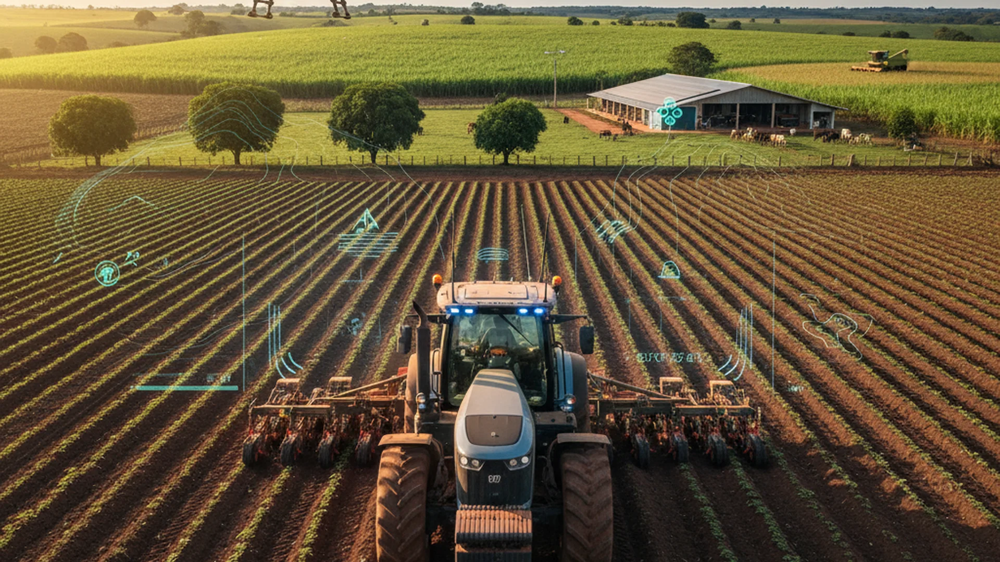
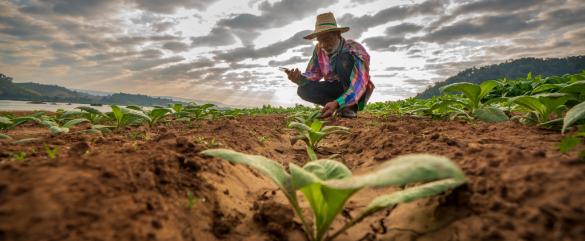
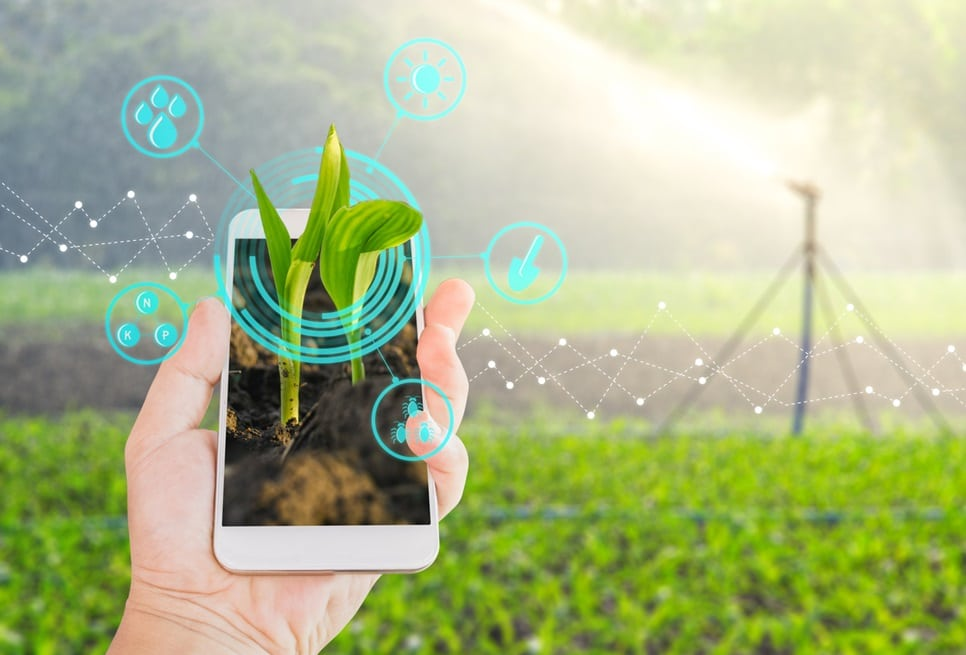

Orbit Agro
Transformamos dados ambientais em recomendações simples para melhorar decisões de irrigação e reduzir o desperdício de água.
Conheça o problemaProblema
A irrigação inadequada pode gerar desperdício de água, aumento de custos e prejuízos ao solo.
Muitos produtores não têm acesso a informações simples para decidir quando e quanto irrigar.


Tecnologia
A solução foi pensada para pequenos e médios agricultores que buscam irrigar melhor.
O foco está em acessibilidade, simplicidade e apoio prático no dia a dia rural.
Objetivos
A Orbit Agro busca tornar a irrigação mais consciente, simples e eficiente para pequenos e médios agricultores.
O objetivo é apoiar decisões práticas, reduzindo desperdícios sem exigir conhecimento técnico avançado.
Reduzir desperdícios
Diminuir o uso desnecessário de água durante a irrigação agrícola.
Apoiar decisões
Ajudar o produtor a entender melhor as condições da plantação.
Simplificar dados
Transformar informações técnicas em orientações fáceis de aplicar.
Público-alvo
A solução foi pensada para pequenos e médios agricultores que buscam irrigar melhor. O foco está em acessibilidade, simplicidade e apoio prático no dia a dia rural.


Benefícios
A Orbit Agro oferece alertas simples, recomendações de irrigação e estimativas de economia hídrica.
Com isso, o agricultor reduz desperdícios e aprende o motivo por trás de cada orientação.
Aplicação
No uso diário, o agricultor acompanha dados simples sobre sua plantação e recebe orientações claras.
A plataforma indica riscos, recomenda ações e explica o motivo de cada sugestão.
Cadastro da área
O agricultor informa os dados básicos da propriedade ou plantação.
Análise ambiental
O sistema avalia umidade, temperatura e risco de desperdício.
Recomendação prática
A plataforma indica se é melhor irrigar, aguardar ou economizar água.